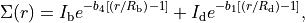
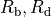
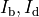
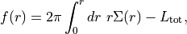
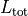

Morphological parameters¶
-
galaxy.morphology.computePAs(image, method='minmax', num=100, returnThresholds=False)[source]¶ Code author: Wilfried Mercier - IRAP <wilfried.mercier@irap.omp.eu>
Compute a set of PA values for a galaxy using different minimum threshold values.
Note
How it works
A set of threshold values are generated between the minimum and the maximum of the image, e.g.
[0, 1, 2] for a galaxy with a minimum of 0 and a maximum of 2 (using num=3)
These values are applied one after another onto the image as a minmum threshold, that is data points with value<threshold are masked. We get what we call a ‘slice’. For each slice, we compute its PA (angle starting from the vertical axis, counting anti clockwise).
Warning
PA angles are given between -90° and +90° so that there is a degeneracy between these two bounds.
If the ‘minmax’ method is used, a galaxy with a PA close to 90° will not have a good PA estimation as different slices will have values oscillating around +90° and -90°, yielding a median value of approximately 0°…
- Parameters
im (2D ndarray) – image of a galaxy
method ('minmax' or 'furthest') –
(Optional) method to use
if ‘minmax’ the PA of each slice is computed as the angle between the min and the max within the slice (not very efficient)
if ‘furthest’ the PA of each slice is computed as the angle between the max and the furthest point relative to it (much more efficient)
num (int) – (Optional) how many slices must be made
returnThresholds (bool) – (Optional) whether to return the threshold values as well as the PAs
- Returns
PA list (and the threshold values if returnThresholds is True)
- Return type
list (and list f returnThresholds is True)
- Raises
ValueError – if the method is neither ‘minmax’, nor ‘furthest’
TypeError – if num is not an int, or if returnThresholds is not a bool
-
galaxy.morphology.the_re_equation_for_2_Sersic_profiles(re, gal, b1=None, b4=None, noStructuredArray=False, magD=None, magB=None, Rd=None, Rb=None, offsetMagD=None, offsetMagB=None, norm=1.0, stretch=1.0)[source]¶ Code author: Wilfried Mercier - IRAP <wilfried.mercier@irap.omp.eu>
A semi-analytical equation whose zero should give the value of the half-light radius for a bulge-disk decomposition defined as

where  are the bulge and disk effective radii, and  are the bulge and disk surface brightness at their effective radii, respectively.
Note
This is meant to be used with a zero search algorithm (dichotomy or anything else).
- Parameters
gal (structured ndarray) –
structured array with data for all the galaxies. The required column names are:
’R_d_GF’ for the effective radius of the disk
’R_b_GF’ for the effective radius of the bulge
’Mag_d_GF’ for the total integrated magnitude of the disk
’Mag_b_GF’ the total integrated magnitude of the bulge
re (float or list[float]) – value of the half-light radius of the sum of the two components. This is the value which shall be returned by a zero search algorithm.
b1 (float) – b1 factor appearing in the Sersic profile of an exponential disk
b4 (float) – b4 factor appearing in the Sersic profile of a bulge
magB (float or list[float]) – total magnitude of the bulge
magD (float or list[float]) – total magnitude of the disk
norm (float) – normalisation factor to divide the equation (used to improve convergence)
noStructuredArray (bool) – if False, the structured array gal will be used. If False, values of the magnitudes and half-light radii of the two components must be given.
offsetMagD (int or float) – magnitude offset used in the magnitude system for the disk
offsetMagB (int or float) – magnitude offset used in the magnitude system for the bulge
Rb (float or list[float]) – half-light radius of the bulge
Rd (float or list[float]) – half-light radius of the disk
stretch (float) – dilatation factor used to multiply re in order to smooth out the sharp slope around the 0 of the function
- Returns
value of the left-hand side of the equation. If re is correct, the returned value should be close to 0.
- Return type
float
- Raises
TypeError – if offsetMagD and offsetMagB are given but are neither float, nor int
-
galaxy.morphology.solve_re(gal, guess=None, b1=None, b4=None, noStructuredArray=False, magD=None, magB=None, Rd=None, Rb=None, normalise=True, stretch=0.05, integration=False, Ltot=None, Ie=None, offsetMagD=None, offsetMagB=None, xtol=0.001, useZeroOrder=True, method='hybr', verbose=True)[source]¶ Code author: Wilfried Mercier - IRAP <wilfried.mercier@irap.omp.eu>
This is meant to find the half-light radius of the sum of an exponential disk and a de Vaucouleur bulge, either via a semi-analytical formula, or using numerical integration.
Note
How to use
There are two ways to use this function:
using numerical integration of the light profiles
by finding the zero of a specific equation.
In both cases, the parameter gal is mandatory. This corresponds to a numpy structured array with the following fields:
‘Mag_d_GF’, ‘Mag_b_GF’, ‘R_d_GF’ and ‘R_b_GF’
HOWEVER, if the flag noStructuredArray is True, this array will not be used (so just cast anything into this parameter, it will not matter) but instead, the optional parameters magD, magB, Rd and Rb must be provided.
The guess can be ignored, though the result may not converge.
b1 and b4 values do not necessarily need to be provided if you only call this function very few times. If not, they will be computed once at the beginning and propagated in subsequent function calls.
Solving methods:
Numerical integration
This method will find the zero of the following function

where  is the total integrated luminosity of the sum of the disk and bulge. The Ltot parameter is not mandatory, as it will be computed if not provided.
However, if not provided, this requires to give magnitude values (this is mandatory in any case) AND a magnitude offset value in order to compute it.
The Ie parameter can be given or can be ignored. In the latter case, it will be computed using the magnitudes and magnitude offset, so this last parameter should be provided as well in this case.
Semi-analytical solution
Warning
This is an experimental feature. It follows from analytically computing the equation for re using its definition as well as the sum of an exponential disk and a bulge.
In this case, the integration parameter must be set to False.
THE FOLLOWING PARAMETERS ARE NOT REQUIRED FOR THIS METHOD:
Ltot, Ie and offset
Additional information
For only one galaxy, only a scalar value may be provided for each parameter you would like to pass. However, for more than one galaxy, a list must be given instead.
Basically, the simplest way to solve re is to call the function the following way:
>>> solve_re(array)
where array is a numpy structured array with the relevant columns.
- Parameters
gal (structured ndarray) – structured array with data for all the galaxies. The required column names are ‘R_d_GF’ (re for the disk component), ‘R_b_GF’ (re for the bulge component), ‘Mag_d_GF’ (the total integrated magnitude for the disk component), ‘Mag_b_GF’ (the total integrated magnitude for the bulge component).
b1 (float) – (Optional) b1 factor appearing in the Sersic profile of an exponential disk
b4 (float) – (Optional) b4 factor appearing in the Sersic profile of a bulge
guess (float or list[float]) – (Optional) guess for the value of re for all the galaxies
Ie (float or list[float]) – (Optional) intensity at half-light radius for all the galaxies (including both profiles)
integration (bool) – (Optional) whether to find re integrating the light profiles or not (i.e. solving the re equation)
Ltot (float or list[float]) – (Optional) total luminosity of the galaxies. This parameter is used when finding re using numerical integration of the light profiles. If integration is True and no Ltot is provided, it will be computed using the total magnitude of each component and the offset value.
magB (float or list[float]) – (Optional) total magnitude of the bulge
magD (float or list[float]) – (Optional) total magnitude of the disk
method (str) – (Optional) method to use to find the zero of the re equation function or the integral to solve
normalise (bool) – (Optional) whether to normalise the equation or not. It is recommended to do so to improve the convergence.
noStructuredArray (bool) – (Optional) if False, the structured array gal will be used. If False, values of the magnitudes and half-light radii of the two components must be given.
offsetMagD (int or float) – (Optional) magnitude offset used in the magnitude system for the disk
offsetMagB (int or float) – (Optional) magnitude offset used in the magnitude system for the bulge
Rb (float or list[float]) – (Optional) half-light radius of the bulge
Rd (float or list[float]) – (Optional) half-light radius of the disk
stretch (float) – (Optional) dilatation factor used to multiply re in order to smooth out the sharp slope around the 0 of the function
useZeroOder (bool) – (Optional) whether to use the zero order analytical solution as a guess. If True, the value of guess will be used by the zero search algorithm.
verbose (bool) – (Optional) whether to print messaged on stdout (True) or not (False)
xtol (float) – (Optional) relative error convergence factor
- Returns
value of re, as well as a convergence flag and a debug dict
- Return type
float or list[float], float or list[float], dict or list[dict]